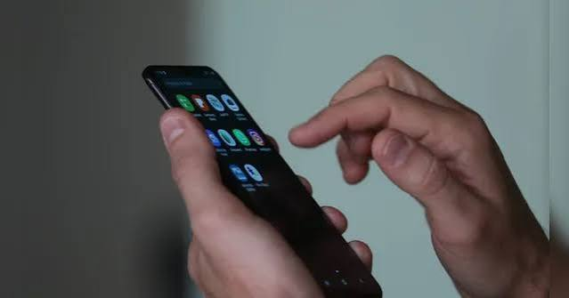

5 funções do celular que você deveria conhecer!
Gravar a tela
Você pode registrar tudo o que acontece na tela sem precisar de outro aplicativo.
Compartilhar sua localização
É possível enviar sua localização em tempo real para alguém.
Usar o celular como lanterna
Parece básico, mas a lanterna está sempre a poucos toques de distância!
Dividir a tela
Em alguns celulares, você pode usar dois aplicativos ao mesmo tempo.
Digitalizar documentos
A câmera pode transformar uma folha de papel em um documento digital.
0 curtidas
0 descurtidas